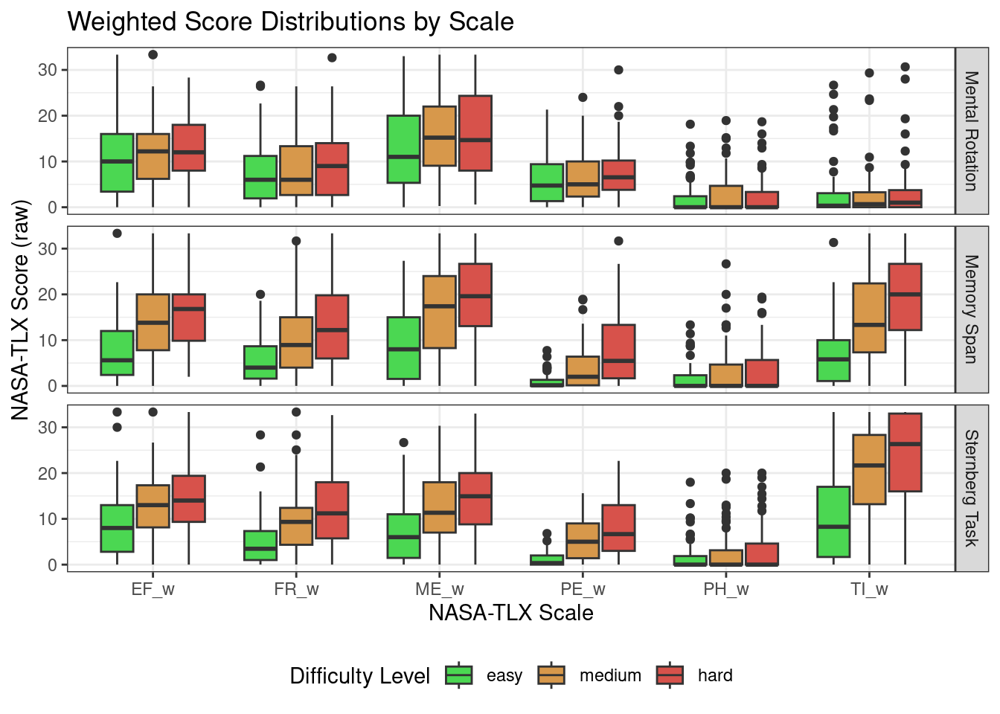

# knitr::opts_chunk$set(eval = FALSE)Analysis. Toloka Banch
Packages
library(tidyverse)── Attaching core tidyverse packages ──────────────────────── tidyverse 2.0.0 ──
✔ dplyr 1.1.2 ✔ readr 2.1.4
✔ forcats 1.0.0 ✔ stringr 1.5.0
✔ ggplot2 3.4.2 ✔ tibble 3.2.1
✔ lubridate 1.9.2 ✔ tidyr 1.3.0
✔ purrr 1.0.1
── Conflicts ────────────────────────────────────────── tidyverse_conflicts() ──
✖ dplyr::filter() masks stats::filter()
✖ dplyr::lag() masks stats::lag()
ℹ Use the conflicted package (<http://conflicted.r-lib.org/>) to force all conflicts to become errorstheme_set(theme_bw()) # set black and white theme
library(lme4)Loading required package: Matrix
Attaching package: 'Matrix'
The following objects are masked from 'package:tidyr':
expand, pack, unpacklibrary(lmerTest)
Attaching package: 'lmerTest'
The following object is masked from 'package:lme4':
lmer
The following object is masked from 'package:stats':
steplibrary(MuMIn)
library(pwr)
library(ez)rm(list = ls())Reading data
MR_data <- read_csv("../preproc-data/MR-tol-data.csv")Rows: 3312 Columns: 11
── Column specification ────────────────────────────────────────────────────────
Delimiter: ","
chr (8): correctAns, base_pic, rotated_pic, key, task, level, id, pool
dbl (3): is_correct, rt, trial
ℹ Use `spec()` to retrieve the full column specification for this data.
ℹ Specify the column types or set `show_col_types = FALSE` to quiet this message.ST_data <- read_csv("../preproc-data/ST-tol-data.csv")Rows: 3312 Columns: 9
── Column specification ────────────────────────────────────────────────────────
Delimiter: ","
chr (5): key, task, level, id, pool
dbl (4): target_present, is_correct, rt, trial
ℹ Use `spec()` to retrieve the full column specification for this data.
ℹ Specify the column types or set `show_col_types = FALSE` to quiet this message.MS_data <- read_csv("../preproc-data/MS-tol-data.csv")Rows: 3312 Columns: 8
── Column specification ────────────────────────────────────────────────────────
Delimiter: ","
chr (4): task, level, id, pool
dbl (4): trials, n, rt, acc
ℹ Use `spec()` to retrieve the full column specification for this data.
ℹ Specify the column types or set `show_col_types = FALSE` to quiet this message.NASATLX_data <- read_csv("../preproc-data/NASATLX-tol-data.csv")Rows: 3726 Columns: 6
── Column specification ────────────────────────────────────────────────────────
Delimiter: ","
chr (5): task, level, id, pool, scale
dbl (1): score
ℹ Use `spec()` to retrieve the full column specification for this data.
ℹ Specify the column types or set `show_col_types = FALSE` to quiet this message.SEQUENCE_data <- read_csv("../preproc-data/SEQ-tol-data.csv")Rows: 621 Columns: 5
── Column specification ────────────────────────────────────────────────────────
Delimiter: ","
chr (4): level, task, id, pool
dbl (1): order
ℹ Use `spec()` to retrieve the full column specification for this data.
ℹ Specify the column types or set `show_col_types = FALSE` to quiet this message.WEIGHTS_data <- read_csv("../preproc-data/WEIGHTS-tol-data.csv")Rows: 1062 Columns: 6
── Column specification ────────────────────────────────────────────────────────
Delimiter: ","
chr (4): task_type, choice, id, pool
dbl (2): n, w
ℹ Use `spec()` to retrieve the full column specification for this data.
ℹ Specify the column types or set `show_col_types = FALSE` to quiet this message.Behavioral data
Remove outliers & Aggregate
is_outlier <- function(x) ifelse(x > quantile(x, .25, na.rm = TRUE) - 1.5 * IQR(x, na.rm = TRUE) &
x < quantile(x, .75, na.rm = TRUE) + 1.5 * IQR(x, na.rm = TRUE),
FALSE, TRUE)Mental Rotation
MR_data |>
group_by(id, level, task) |>
mutate(is_outlier = is_outlier(rt)) |>
filter(!is_outlier) |>
summarise(rt = mean(rt),
acc = mean(is_correct)) -> MR_data_agg`summarise()` has grouped output by 'id', 'level'. You can override using the
`.groups` argument.MR_data_agg |> write_csv("../preproc-data/MR_tol_data_agg.csv")Memory Span
MS_data |>
group_by(id, level, task) |>
mutate(is_outlier = is_outlier(rt)) |>
filter(!is_outlier) |>
summarise(rt = mean(rt),
acc = mean(acc)) -> MS_data_agg`summarise()` has grouped output by 'id', 'level'. You can override using the
`.groups` argument.MS_data_agg |> write_csv("../preproc-data/MS_tol_data_agg.csv")Sternberg Task
ST_data |>
group_by(id, level, task) |>
mutate(is_outlier = is_outlier(rt)) |>
filter(!is_outlier) |>
summarise(rt = mean(rt),
acc = mean(is_correct)) -> ST_data_agg`summarise()` has grouped output by 'id', 'level'. You can override using the
`.groups` argument.ST_data_agg |> write_csv("../preproc-data/ST_tol_data_agg.csv")Plot all paradigms
MR_data_agg |>
bind_rows(MS_data_agg, ST_data_agg) |>
mutate(level = factor(level,
ordered = TRUE,
levels = c("easy", "medium", "hard"))) |>
ggplot(aes(level, rt)) +
facet_wrap(~ task, scales = "free_y",
labeller = labeller(task = c(MR = "Mental Rotation",
MS = "Memory Span",
ST = "Sternberg Task"))) +
stat_summary(fun.data = mean_cl_boot, geom = "pointrange") +
labs(x = "Difficulty Level", y = "Reaction time, s")
MR_data_agg |>
bind_rows(MS_data_agg, ST_data_agg) |>
mutate(level = factor(level,
ordered = TRUE,
levels = c("easy", "medium", "hard"))) |>
ggplot(aes(level, acc)) +
facet_wrap(~ task, scales = "free_y",
labeller = labeller(task = c(MR = "Mental Rotation",
MS = "Memory Span",
ST = "Sternberg Task"))) +
stat_summary(fun.data = mean_cl_boot, geom = "pointrange") +
labs(x = "Difficulty Level", y = "Accuracy")Desriptives
Mental Rotation
MR_data_agg |>
group_by(level, task) |>
summarise(n = unique(id) |> length(),
mean = mean(rt),
median = median(rt),
sd = sd(rt),
min = min(rt),
max = max(rt),
CI_lower = mean - 1.96 * sd / sqrt(n),
CI_upper = mean + 1.96 * sd / sqrt(n)) |>
# mutate_all(.funs = function(x) if (is.double(x)) return(round(x, 2)) else return(x)) |>
knitr::kable(caption = "Mental Rotation. Reaction Time", digits = 2)`summarise()` has grouped output by 'level'. You can override using the
`.groups` argument.| level | task | n | mean | median | sd | min | max | CI_lower | CI_upper |
|---|---|---|---|---|---|---|---|---|---|
| easy | MR | 69 | 4.16 | 4.02 | 2.12 | 0.09 | 9.59 | 3.66 | 4.66 |
| hard | MR | 69 | 7.43 | 5.37 | 5.85 | 0.67 | 29.15 | 6.05 | 8.81 |
| medium | MR | 69 | 6.17 | 5.21 | 3.96 | 0.15 | 18.82 | 5.24 | 7.10 |
MR_data_agg |>
group_by(level, task) |>
summarise(n = unique(id) |> length(),
mean = mean(acc),
sd = sd(acc),
min = min(acc),
max = max(acc),
CI_lower = mean - 1.96 * sd / sqrt(n),
CI_upper = mean + 1.96 * sd / sqrt(n)) |>
# mutate_all(.funs = function(x) if (is.double(x)) return(round(x, 3)) else return(x)) |>
knitr::kable(caption = "Mental Rotation. Accuracy", digits = 3)`summarise()` has grouped output by 'level'. You can override using the
`.groups` argument.| level | task | n | mean | sd | min | max | CI_lower | CI_upper |
|---|---|---|---|---|---|---|---|---|
| easy | MR | 69 | 0.728 | 0.222 | 0.250 | 1 | 0.676 | 0.781 |
| hard | MR | 69 | 0.615 | 0.185 | 0.286 | 1 | 0.571 | 0.659 |
| medium | MR | 69 | 0.681 | 0.233 | 0.125 | 1 | 0.626 | 0.736 |
Memory Span
MS_data_agg |>
group_by(level, task) |>
summarise(n = unique(id) |> length(),
mean = mean(rt, na.rm = TRUE),
median = median(rt, na.rm = TRUE),
sd = sd(rt, na.rm = TRUE),
min = min(rt, na.rm = TRUE),
max = max(rt, na.rm = TRUE),
CI_lower = mean - 1.96 * sd / sqrt(n),
CI_upper = mean + 1.96 * sd / sqrt(n)) |>
# mutate_all(.funs = function(x) if (is.double(x)) return(round(x, 2)) else return(x)) |>
knitr::kable(caption = "Memory Span. Reaction Time", digits = 2)`summarise()` has grouped output by 'level'. You can override using the
`.groups` argument.| level | task | n | mean | median | sd | min | max | CI_lower | CI_upper |
|---|---|---|---|---|---|---|---|---|---|
| easy | MS | 69 | 11.12 | 9.92 | 3.88 | 6.21 | 25.69 | 10.21 | 12.04 |
| hard | MS | 69 | 24.62 | 22.58 | 10.82 | 6.92 | 56.42 | 22.07 | 27.18 |
| medium | MS | 69 | 21.05 | 17.89 | 9.06 | 8.70 | 54.38 | 18.92 | 23.19 |
MS_data_agg |>
group_by(level, task) |>
summarise(n = unique(id) |> length(),
mean = mean(acc),
sd = sd(acc),
min = min(acc),
max = max(acc),
CI_lower = mean - 1.96 * sd / sqrt(n),
CI_upper = mean + 1.96 * sd / sqrt(n)) |>
knitr::kable(caption = "Memory Span. Accuracy", digits = 3)`summarise()` has grouped output by 'level'. You can override using the
`.groups` argument.| level | task | n | mean | sd | min | max | CI_lower | CI_upper |
|---|---|---|---|---|---|---|---|---|
| easy | MS | 69 | 0.960 | 0.088 | 0.333 | 1 | 0.939 | 0.980 |
| hard | MS | 69 | 0.722 | 0.197 | 0.200 | 1 | 0.676 | 0.769 |
| medium | MS | 69 | 0.896 | 0.112 | 0.537 | 1 | 0.870 | 0.922 |
Sternberg Task
ST_data_agg |>
group_by(level, task) |>
summarise(n = unique(id) |> length(),
mean = mean(rt),
sd = sd(rt),
min = min(rt),
max = max(rt),
CI_lower = mean - 1.96 * sd / sqrt(n),
CI_upper = mean + 1.96 * sd / sqrt(n)) |>
knitr::kable(caption = "Sternberg Task. Reaction Time", digits = 2)`summarise()` has grouped output by 'level'. You can override using the
`.groups` argument.| level | task | n | mean | sd | min | max | CI_lower | CI_upper |
|---|---|---|---|---|---|---|---|---|
| easy | ST | 69 | 1.15 | 0.40 | 0.58 | 2.23 | 1.06 | 1.25 |
| hard | ST | 69 | 1.64 | 1.05 | 0.82 | 5.20 | 1.39 | 1.89 |
| medium | ST | 69 | 1.41 | 0.62 | 0.07 | 3.51 | 1.26 | 1.55 |
ST_data_agg |>
group_by(level, task) |>
summarise(n = unique(id) |> length(),
mean = mean(acc),
sd = sd(acc),
min = min(acc),
max = max(acc),
CI_lower = mean - 1.96 * sd / sqrt(n),
CI_upper = mean + 1.96 * sd / sqrt(n)) |>
knitr::kable(caption = "Sternberg Task. Accuracy", digits = 3)`summarise()` has grouped output by 'level'. You can override using the
`.groups` argument.| level | task | n | mean | sd | min | max | CI_lower | CI_upper |
|---|---|---|---|---|---|---|---|---|
| easy | ST | 69 | 0.972 | 0.064 | 0.625 | 1 | 0.957 | 0.987 |
| hard | ST | 69 | 0.730 | 0.152 | 0.385 | 1 | 0.694 | 0.765 |
| medium | ST | 69 | 0.856 | 0.121 | 0.375 | 1 | 0.828 | 0.885 |
ANOVA
MR_data_agg |>
bind_rows(MS_data_agg, ST_data_agg) -> all_tol_data_aggReaction Time
ezANOVA(data = all_tol_data_agg,
dv = rt,
wid = id,
within = .(task, level),
detailed = TRUE) |>
psychReport::aovEffectSize() -> rt_anovaWarning: Converting "id" to factor for ANOVA.Warning: Converting "task" to factor for ANOVA.Warning: Converting "level" to factor for ANOVA.rt_anova$ANOVA |>
knitr::kable(caption = "Accuracy ANOVA Results", digits = 3)| Effect | DFn | DFd | SSn | SSd | F | p | p<.05 | pes |
|---|---|---|---|---|---|---|---|---|
| (Intercept) | 1 | 68 | 47557.627 | 5447.339 | 593.669 | 0 | * | 0.897 |
| task | 2 | 136 | 34305.286 | 7996.336 | 291.729 | 0 | * | 0.811 |
| level | 2 | 136 | 3625.613 | 1791.109 | 137.647 | 0 | * | 0.669 |
| task:level | 4 | 272 | 3516.353 | 3146.222 | 76.000 | 0 | * | 0.528 |
rt_anova$`Mauchly's Test for Sphericity` |>
knitr::kable(caption = "Mauchly's Test for Sphericity Results", digits = 3)| Effect | W | p | p<.05 | |
|---|---|---|---|---|
| 2 | task | 0.486 | 0.000 | * |
| 3 | level | 0.959 | 0.244 | |
| 4 | task:level | 0.219 | 0.000 | * |
rt_anova$`Sphericity Corrections` |>
knitr::kable(caption = "Sphericity Corrections", digits = 3)| Effect | GGe | p[GG] | p[GG]<.05 | HFe | p[HF] | p[HF]<.05 | |
|---|---|---|---|---|---|---|---|
| 2 | task | 0.661 | 0 | * | 0.669 | 0 | * |
| 3 | level | 0.960 | 0 | * | 0.988 | 0 | * |
| 4 | task:level | 0.603 | 0 | * | 0.627 | 0 | * |
pairwise.t.test(
x = all_tol_data_agg$rt,
g = interaction(all_tol_data_agg$task,
all_tol_data_agg$level),
# paired = TRUE
)
Pairwise comparisons using t tests with pooled SD
data: all_tol_data_agg$rt and interaction(all_tol_data_agg$task, all_tol_data_agg$level)
MR.easy MS.easy ST.easy MR.hard MS.hard ST.hard MR.medium MS.medium
MS.easy 5.5e-12 - - - - - - -
ST.easy 0.01073 < 2e-16 - - - - - -
MR.hard 0.00429 0.00095 6.8e-10 - - - - -
MS.hard < 2e-16 < 2e-16 < 2e-16 < 2e-16 - - - -
ST.hard 0.04328 < 2e-16 1.00000 1.6e-08 < 2e-16 - - -
MR.medium 0.15675 2.2e-06 1.6e-06 0.70398 < 2e-16 1.9e-05 - -
MS.medium < 2e-16 < 2e-16 < 2e-16 < 2e-16 0.00143 < 2e-16 < 2e-16 -
ST.medium 0.02327 < 2e-16 1.00000 3.6e-09 < 2e-16 1.00000 5.7e-06 < 2e-16
P value adjustment method: holm Accuracy
ezANOVA(data = all_tol_data_agg,
dv = acc,
wid = id,
within = .(task, level),
detailed = TRUE) |>
psychReport::aovEffectSize() -> acc_anovaWarning: Converting "id" to factor for ANOVA.Warning: Converting "task" to factor for ANOVA.Warning: Converting "level" to factor for ANOVA.acc_anova$ANOVA |>
knitr::kable(caption = "Accuracy ANOVA Results", digits = 3)| Effect | DFn | DFd | SSn | SSd | F | p | p<.05 | pes |
|---|---|---|---|---|---|---|---|---|
| (Intercept) | 1 | 68 | 392.980 | 4.885 | 5470.651 | 0 | * | 0.988 |
| task | 2 | 136 | 4.539 | 5.700 | 54.153 | 0 | * | 0.443 |
| level | 2 | 136 | 4.115 | 2.032 | 137.747 | 0 | * | 0.669 |
| task:level | 4 | 272 | 0.437 | 3.584 | 8.298 | 0 | * | 0.109 |
acc_anova$`Mauchly's Test for Sphericity` |>
knitr::kable(caption = "Mauchly's Test for Sphericity Results", digits = 3)| Effect | W | p | p<.05 | |
|---|---|---|---|---|
| 2 | task | 0.528 | 0.000 | * |
| 3 | level | 0.928 | 0.082 | |
| 4 | task:level | 0.636 | 0.000 | * |
acc_anova$`Sphericity Corrections` |>
knitr::kable(caption = "Sphericity Corrections", digits = 3)| Effect | GGe | p[GG] | p[GG]<.05 | HFe | p[HF] | p[HF]<.05 | |
|---|---|---|---|---|---|---|---|
| 2 | task | 0.679 | 0 | * | 0.688 | 0 | * |
| 3 | level | 0.933 | 0 | * | 0.958 | 0 | * |
| 4 | task:level | 0.818 | 0 | * | 0.865 | 0 | * |
pairwise.t.test(
x = all_tol_data_agg$acc,
g = interaction(all_tol_data_agg$task,
all_tol_data_agg$level),
# paired = TRUE
)
Pairwise comparisons using t tests with pooled SD
data: all_tol_data_agg$acc and interaction(all_tol_data_agg$task, all_tol_data_agg$level)
MR.easy MS.easy ST.easy MR.hard MS.hard ST.hard MR.medium MS.medium
MS.easy 1.1e-14 - - - - - - -
ST.easy 4.7e-16 1.00000 - - - - - -
MR.hard 0.00068 < 2e-16 < 2e-16 - - - - -
MS.hard 1.00000 2.2e-15 < 2e-16 0.00152 - - - -
ST.hard 1.00000 1.6e-14 6.8e-16 0.00059 1.00000 - - -
MR.medium 0.62893 < 2e-16 < 2e-16 0.17600 0.80900 0.62893 - -
MS.medium 5.0e-08 0.19633 0.07244 < 2e-16 1.5e-08 6.4e-08 8.0e-13 -
ST.medium 8.5e-05 0.00242 0.00057 7.9e-16 3.2e-05 0.00010 1.1e-08 0.80900
P value adjustment method: holm Questionnaire Data
NASATLX_data |>
# fix factor
mutate(
level = factor(
level,
levels = c("easy", "medium", "hard"),
ordered = TRUE
)
) -> NASATLX_datalevel_colors <- c("#4bd752", "#d7984b", "#d7524b")
task_colors <- c("red4", "green4", "blue4")
back_histogram_color <- "gray60"Weighted Scales
WEIGHTS_data |>
rename("scale" = choice,
"task" = task_type) |>
mutate(task = recode(task,
"mental_rotation" = "MR",
"sternberg" = "ST",
"mental_span" = "MS")) |>
full_join(NASATLX_data,
by = join_by(id, task, scale)) |>
select(-pool.x) |>
rename("pool" = pool.y) |>
mutate(n = ifelse(is.na(n), 0, n),
w = ifelse(is.na(w), 0, w)) |>
mutate(score_w = w * score,
scale_w = paste0(scale, "_w")) |>
select(id, task, level, scale_w, score_w) |>
pivot_wider(values_from = score_w, names_from = scale_w) |>
mutate(OW_w = ME_w + PH_w + TI_w + PE_w + EF_w + FR_w) -> nasa_tlx_weighted_wide
nasa_tlx_weighted_wide |>
pivot_longer(cols = -c("id", "task", "level"),
names_to = "scale_w", values_to = "score_w") -> NASATLX_weighted
nasa_tlx_weighted_wide |>
full_join(
NASATLX_data |>
pivot_wider(values_from = score, names_from = scale) |>
mutate(OW = ME + PH + TI + PE + EF + FR),
by = join_by(id, task, level)
) -> NASATLXNASATLX_weighted |>
filter(scale_w != "OW_w") |>
ggplot(aes(scale_w, score_w, fill = level)) +
geom_boxplot() +
facet_grid(task ~ .,
labeller = labeller(task = c(
MR = "Mental Rotation",
MS = "Memory Span",
ST = "Sternberg Task"
))) +
theme(legend.position = "bottom") +
labs(x = "NASA-TLX Scale",
y = "NASA-TLX Score (raw)",
fill = "Difficulty Level") +
scale_fill_manual(values = level_colors)
pd <- position_dodge(0.3)
NASATLX_weighted |>
filter(scale_w != "OW_w") |>
ggplot(aes(scale_w, score_w, color = level)) +
stat_summary(fun.data = mean_cl_boot, geom = "errorbar",
position = pd, width = .3) +
stat_summary(fun = mean, geom = "point",
position = pd) +
facet_grid(task ~ .,
labeller = labeller(task = c(
MR = "Mental Rotation",
MS = "Memory Span",
ST = "Sternberg Task"
))) +
theme(legend.position = "bottom") +
labs(x = "NASA-TLX Scale",
y = "NASA-TLX Score (raw)",
fill = "Difficulty Level") +
scale_color_manual(values = level_colors)
NASATLX |>
pivot_longer(cols = -c("id", "task", "level", "pool"),
names_to = "scale", values_to = "score") |>
filter(str_detect(scale, "_w")) |>
rename("score_w" = score) |>
mutate(scale = str_remove_all(scale, "_w")) |>
full_join(
NASATLX |>
pivot_longer(cols = -c("id", "task", "level", "pool"),
names_to = "scale", values_to = "score") |>
filter(!str_detect(scale, "_w")),
by = join_by("id", "task", "level", "scale", "pool")
) -> nasatlxnasatlx |>
filter(scale != "OW") |>
ggplot(aes(score, score_w, color = level)) +
geom_point(alpha = .3) +
geom_smooth(method = "lm") +
facet_grid(task ~ scale) +
scale_color_manual(values = level_colors) +
theme(legend.position = "bottom")`geom_smooth()` using formula = 'y ~ x'
nasatlx |>
group_by(task, level, scale) |>
summarise(cor = cor(score, score_w)) |>
knitr::kable(caption = "Correlations between raw and weighted scores",
digits = 2)`summarise()` has grouped output by 'task', 'level'. You can override using the
`.groups` argument.| task | level | scale | cor |
|---|---|---|---|
| MR | easy | EF | 0.91 |
| MR | easy | FR | 0.77 |
| MR | easy | ME | 0.89 |
| MR | easy | OW | 0.97 |
| MR | easy | PE | 0.67 |
| MR | easy | PH | 0.53 |
| MR | easy | TI | 0.78 |
| MR | medium | EF | 0.91 |
| MR | medium | FR | 0.72 |
| MR | medium | ME | 0.84 |
| MR | medium | OW | 0.95 |
| MR | medium | PE | 0.52 |
| MR | medium | PH | 0.62 |
| MR | medium | TI | 0.64 |
| MR | hard | EF | 0.88 |
| MR | hard | FR | 0.74 |
| MR | hard | ME | 0.84 |
| MR | hard | OW | 0.94 |
| MR | hard | PE | 0.40 |
| MR | hard | PH | 0.71 |
| MR | hard | TI | 0.68 |
| MS | easy | EF | 0.85 |
| MS | easy | FR | 0.75 |
| MS | easy | ME | 0.88 |
| MS | easy | OW | 0.98 |
| MS | easy | PE | 0.71 |
| MS | easy | PH | 0.55 |
| MS | easy | TI | 0.87 |
| MS | medium | EF | 0.77 |
| MS | medium | FR | 0.69 |
| MS | medium | ME | 0.75 |
| MS | medium | OW | 0.96 |
| MS | medium | PE | 0.66 |
| MS | medium | PH | 0.62 |
| MS | medium | TI | 0.75 |
| MS | hard | EF | 0.67 |
| MS | hard | FR | 0.63 |
| MS | hard | ME | 0.62 |
| MS | hard | OW | 0.92 |
| MS | hard | PE | 0.61 |
| MS | hard | PH | 0.56 |
| MS | hard | TI | 0.66 |
| ST | easy | EF | 0.86 |
| ST | easy | FR | 0.73 |
| ST | easy | ME | 0.81 |
| ST | easy | OW | 0.97 |
| ST | easy | PE | 0.69 |
| ST | easy | PH | 0.58 |
| ST | easy | TI | 0.87 |
| ST | medium | EF | 0.69 |
| ST | medium | FR | 0.61 |
| ST | medium | ME | 0.63 |
| ST | medium | OW | 0.93 |
| ST | medium | PE | 0.42 |
| ST | medium | PH | 0.62 |
| ST | medium | TI | 0.74 |
| ST | hard | EF | 0.76 |
| ST | hard | FR | 0.62 |
| ST | hard | ME | 0.69 |
| ST | hard | OW | 0.86 |
| ST | hard | PE | 0.46 |
| ST | hard | PH | 0.60 |
| ST | hard | TI | 0.74 |
GLMM weighted scales
ME
mix_ME_w <- lmer(ME_w ~ task * level + (1|id),
nasa_tlx_weighted_wide,
contrasts = list(level="contr.treatment"))
summary(mix_ME_w)Linear mixed model fit by REML. t-tests use Satterthwaite's method [
lmerModLmerTest]
Formula: ME_w ~ task * level + (1 | id)
Data: nasa_tlx_weighted_wide
REML criterion at convergence: 4185.3
Scaled residuals:
Min 1Q Median 3Q Max
-3.4591 -0.6587 -0.0439 0.6360 2.5992
Random effects:
Groups Name Variance Std.Dev.
id (Intercept) 34.13 5.842
Residual 40.42 6.358
Number of obs: 621, groups: id, 69
Fixed effects:
Estimate Std. Error df t value Pr(>|t|)
(Intercept) 13.028 1.040 228.636 12.533 < 2e-16 ***
taskMS -4.252 1.082 544.000 -3.928 9.66e-05 ***
taskST -5.996 1.082 544.000 -5.539 4.73e-08 ***
levelmedium 2.491 1.082 544.000 2.301 0.021766 *
levelhard 3.155 1.082 544.000 2.914 0.003712 **
taskMS:levelmedium 5.288 1.531 544.000 3.454 0.000595 ***
taskST:levelmedium 2.875 1.531 544.000 1.878 0.060876 .
taskMS:levelhard 7.388 1.531 544.000 4.826 1.81e-06 ***
taskST:levelhard 4.767 1.531 544.000 3.114 0.001942 **
---
Signif. codes: 0 '***' 0.001 '**' 0.01 '*' 0.05 '.' 0.1 ' ' 1
Correlation of Fixed Effects:
(Intr) taskMS taskST lvlmdm lvlhrd tskMS:lvlm tskST:lvlm tskMS:lvlh
taskMS -0.521
taskST -0.521 0.500
levelmedium -0.521 0.500 0.500
levelhard -0.521 0.500 0.500 0.500
tskMS:lvlmd 0.368 -0.707 -0.354 -0.707 -0.354
tskST:lvlmd 0.368 -0.354 -0.707 -0.707 -0.354 0.500
tskMS:lvlhr 0.368 -0.707 -0.354 -0.354 -0.707 0.500 0.250
tskST:lvlhr 0.368 -0.354 -0.707 -0.354 -0.707 0.250 0.500 0.500 anova(mix_ME_w)Type III Analysis of Variance Table with Satterthwaite's method
Sum Sq Mean Sq NumDF DenDF F value Pr(>F)
task 1628.6 814.31 2 544 20.1438 3.635e-09 ***
level 5732.2 2866.09 2 544 70.8991 < 2.2e-16 ***
task:level 1029.4 257.35 4 544 6.3661 5.192e-05 ***
---
Signif. codes: 0 '***' 0.001 '**' 0.01 '*' 0.05 '.' 0.1 ' ' 1r.squaredGLMM(mix_ME_w)[1]Warning: 'r.squaredGLMM' now calculates a revised statistic. See the help page.[1] 0.1536195PH
mix_PH_w <- lmer(PH_w ~ task * level + (1|id),
nasa_tlx_weighted_wide,
contrasts = list(level="contr.treatment"))
summary(mix_PH_w)Linear mixed model fit by REML. t-tests use Satterthwaite's method [
lmerModLmerTest]
Formula: PH_w ~ task * level + (1 | id)
Data: nasa_tlx_weighted_wide
REML criterion at convergence: 3350.7
Scaled residuals:
Min 1Q Median 3Q Max
-3.5630 -0.4214 -0.0591 0.1998 6.3665
Random effects:
Groups Name Variance Std.Dev.
id (Intercept) 10.46 3.234
Residual 10.13 3.183
Number of obs: 621, groups: id, 69
Fixed effects:
Estimate Std. Error df t value Pr(>|t|)
(Intercept) 2.0918 0.5463 199.7198 3.829 0.000172 ***
taskMS -0.4271 0.5420 544.0000 -0.788 0.431052
taskST -0.3816 0.5420 544.0000 -0.704 0.481616
levelmedium 0.5556 0.5420 544.0000 1.025 0.305778
levelhard 0.4329 0.5420 544.0000 0.799 0.424827
taskMS:levelmedium 1.1758 0.7664 544.0000 1.534 0.125574
taskST:levelmedium 0.2271 0.7664 544.0000 0.296 0.767159
taskMS:levelhard 1.7614 0.7664 544.0000 2.298 0.021936 *
taskST:levelhard 0.8570 0.7664 544.0000 1.118 0.263995
---
Signif. codes: 0 '***' 0.001 '**' 0.01 '*' 0.05 '.' 0.1 ' ' 1
Correlation of Fixed Effects:
(Intr) taskMS taskST lvlmdm lvlhrd tskMS:lvlm tskST:lvlm tskMS:lvlh
taskMS -0.496
taskST -0.496 0.500
levelmedium -0.496 0.500 0.500
levelhard -0.496 0.500 0.500 0.500
tskMS:lvlmd 0.351 -0.707 -0.354 -0.707 -0.354
tskST:lvlmd 0.351 -0.354 -0.707 -0.707 -0.354 0.500
tskMS:lvlhr 0.351 -0.707 -0.354 -0.354 -0.707 0.500 0.250
tskST:lvlhr 0.351 -0.354 -0.707 -0.354 -0.707 0.250 0.500 0.500 anova(mix_PH_w)Type III Analysis of Variance Table with Satterthwaite's method
Sum Sq Mean Sq NumDF DenDF F value Pr(>F)
task 43.654 21.827 2 544 2.1540 0.1170
level 195.365 97.682 2 544 9.6397 7.691e-05 ***
task:level 59.268 14.817 4 544 1.4622 0.2123
---
Signif. codes: 0 '***' 0.001 '**' 0.01 '*' 0.05 '.' 0.1 ' ' 1r.squaredGLMM(mix_PH_w)[1][1] 0.02282704TI
mix_TI_w <- lmer(TI_w ~ task * level + (1|id),
nasa_tlx_weighted_wide,
contrasts = list(level="contr.treatment"))
summary(mix_TI_w)Linear mixed model fit by REML. t-tests use Satterthwaite's method [
lmerModLmerTest]
Formula: TI_w ~ task * level + (1 | id)
Data: nasa_tlx_weighted_wide
REML criterion at convergence: 4224.7
Scaled residuals:
Min 1Q Median 3Q Max
-2.80483 -0.61342 -0.06484 0.68723 2.57780
Random effects:
Groups Name Variance Std.Dev.
id (Intercept) 22.17 4.709
Residual 45.41 6.739
Number of obs: 621, groups: id, 69
Fixed effects:
Estimate Std. Error df t value Pr(>|t|)
(Intercept) 3.1459 0.9897 328.8539 3.179 0.001620 **
taskMS 4.2386 1.1473 544.0000 3.694 0.000243 ***
taskST 6.6792 1.1473 544.0000 5.822 9.96e-09 ***
levelmedium -0.3295 1.1473 544.0000 -0.287 0.774090
levelhard 0.1150 1.1473 544.0000 0.100 0.920210
taskMS:levelmedium 7.7546 1.6225 544.0000 4.779 2.27e-06 ***
taskST:levelmedium 10.5430 1.6225 544.0000 6.498 1.84e-10 ***
taskMS:levelhard 11.9227 1.6225 544.0000 7.348 7.40e-13 ***
taskST:levelhard 13.1488 1.6225 544.0000 8.104 3.53e-15 ***
---
Signif. codes: 0 '***' 0.001 '**' 0.01 '*' 0.05 '.' 0.1 ' ' 1
Correlation of Fixed Effects:
(Intr) taskMS taskST lvlmdm lvlhrd tskMS:lvlm tskST:lvlm tskMS:lvlh
taskMS -0.580
taskST -0.580 0.500
levelmedium -0.580 0.500 0.500
levelhard -0.580 0.500 0.500 0.500
tskMS:lvlmd 0.410 -0.707 -0.354 -0.707 -0.354
tskST:lvlmd 0.410 -0.354 -0.707 -0.707 -0.354 0.500
tskMS:lvlhr 0.410 -0.707 -0.354 -0.354 -0.707 0.500 0.250
tskST:lvlhr 0.410 -0.354 -0.707 -0.354 -0.707 0.250 0.500 0.500 anova(mix_TI_w)Type III Analysis of Variance Table with Satterthwaite's method
Sum Sq Mean Sq NumDF DenDF F value Pr(>F)
task 23690.8 11845.4 2 544 260.846 < 2.2e-16 ***
level 7753.5 3876.8 2 544 85.370 < 2.2e-16 ***
task:level 4003.6 1000.9 4 544 22.041 < 2.2e-16 ***
---
Signif. codes: 0 '***' 0.001 '**' 0.01 '*' 0.05 '.' 0.1 ' ' 1r.squaredGLMM(mix_TI_w)[1][1] 0.4582838PE
mix_PE_w <- lmer(PE_w ~ task * level + (1|id),
nasa_tlx_weighted_wide,
contrasts = list(level="contr.treatment"))
summary(mix_PE_w)Linear mixed model fit by REML. t-tests use Satterthwaite's method [
lmerModLmerTest]
Formula: PE_w ~ task * level + (1 | id)
Data: nasa_tlx_weighted_wide
REML criterion at convergence: 3645.1
Scaled residuals:
Min 1Q Median 3Q Max
-2.3286 -0.6693 -0.1207 0.5176 4.2801
Random effects:
Groups Name Variance Std.Dev.
id (Intercept) 9.475 3.078
Residual 17.443 4.177
Number of obs: 621, groups: id, 69
Fixed effects:
Estimate Std. Error df t value Pr(>|t|)
(Intercept) 5.8802 0.6246 307.3472 9.414 < 2e-16 ***
taskMS -4.9362 0.7111 544.0000 -6.942 1.10e-11 ***
taskST -4.6232 0.7111 544.0000 -6.502 1.80e-10 ***
levelmedium 0.8676 0.7111 544.0000 1.220 0.222919
levelhard 2.0203 0.7111 544.0000 2.841 0.004662 **
taskMS:levelmedium 2.4029 1.0056 544.0000 2.390 0.017209 *
taskST:levelmedium 3.3507 1.0056 544.0000 3.332 0.000921 ***
taskMS:levelhard 4.8164 1.0056 544.0000 4.790 2.16e-06 ***
taskST:levelhard 4.7034 1.0056 544.0000 4.677 3.67e-06 ***
---
Signif. codes: 0 '***' 0.001 '**' 0.01 '*' 0.05 '.' 0.1 ' ' 1
Correlation of Fixed Effects:
(Intr) taskMS taskST lvlmdm lvlhrd tskMS:lvlm tskST:lvlm tskMS:lvlh
taskMS -0.569
taskST -0.569 0.500
levelmedium -0.569 0.500 0.500
levelhard -0.569 0.500 0.500 0.500
tskMS:lvlmd 0.402 -0.707 -0.354 -0.707 -0.354
tskST:lvlmd 0.402 -0.354 -0.707 -0.707 -0.354 0.500
tskMS:lvlhr 0.402 -0.707 -0.354 -0.354 -0.707 0.500 0.250
tskST:lvlhr 0.402 -0.354 -0.707 -0.354 -0.707 0.250 0.500 0.500 anova(mix_PE_w)Type III Analysis of Variance Table with Satterthwaite's method
Sum Sq Mean Sq NumDF DenDF F value Pr(>F)
task 725.0 362.50 2 544 20.7814 2.009e-09 ***
level 2796.6 1398.31 2 544 80.1628 < 2.2e-16 ***
task:level 552.1 138.02 4 544 7.9127 3.331e-06 ***
---
Signif. codes: 0 '***' 0.001 '**' 0.01 '*' 0.05 '.' 0.1 ' ' 1r.squaredGLMM(mix_PE_w)[1][1] 0.196197EF
mix_EF_w <- lmer(EF_w ~ task * level + (1|id),
nasa_tlx_weighted_wide,
contrasts = list(level="contr.treatment"))
summary(mix_EF_w)Linear mixed model fit by REML. t-tests use Satterthwaite's method [
lmerModLmerTest]
Formula: EF_w ~ task * level + (1 | id)
Data: nasa_tlx_weighted_wide
REML criterion at convergence: 4001.4
Scaled residuals:
Min 1Q Median 3Q Max
-3.8519 -0.6249 0.0449 0.6306 3.1487
Random effects:
Groups Name Variance Std.Dev.
id (Intercept) 27.50 5.244
Residual 29.66 5.446
Number of obs: 621, groups: id, 69
Fixed effects:
Estimate Std. Error df t value Pr(>|t|)
(Intercept) 10.6377 0.9102 214.5876 11.688 < 2e-16 ***
taskMS -3.1362 0.9272 544.0000 -3.383 0.00077 ***
taskST -1.9053 0.9272 544.0000 -2.055 0.04036 *
levelmedium 1.3768 0.9272 544.0000 1.485 0.13814
levelhard 2.5101 0.9272 544.0000 2.707 0.00700 **
taskMS:levelmedium 5.2406 1.3112 544.0000 3.997 7.31e-05 ***
taskST:levelmedium 2.8647 1.3112 544.0000 2.185 0.02933 *
taskMS:levelhard 6.1932 1.3112 544.0000 4.723 2.96e-06 ***
taskST:levelhard 2.8367 1.3112 544.0000 2.163 0.03094 *
---
Signif. codes: 0 '***' 0.001 '**' 0.01 '*' 0.05 '.' 0.1 ' ' 1
Correlation of Fixed Effects:
(Intr) taskMS taskST lvlmdm lvlhrd tskMS:lvlm tskST:lvlm tskMS:lvlh
taskMS -0.509
taskST -0.509 0.500
levelmedium -0.509 0.500 0.500
levelhard -0.509 0.500 0.500 0.500
tskMS:lvlmd 0.360 -0.707 -0.354 -0.707 -0.354
tskST:lvlmd 0.360 -0.354 -0.707 -0.707 -0.354 0.500
tskMS:lvlhr 0.360 -0.707 -0.354 -0.354 -0.707 0.500 0.250
tskST:lvlhr 0.360 -0.354 -0.707 -0.354 -0.707 0.250 0.500 0.500 anova(mix_EF_w)Type III Analysis of Variance Table with Satterthwaite's method
Sum Sq Mean Sq NumDF DenDF F value Pr(>F)
task 63.3 31.67 2 544 1.0678 0.3445
level 3393.7 1696.87 2 544 57.2144 < 2.2e-16 ***
task:level 773.2 193.30 4 544 6.5178 3.968e-05 ***
---
Signif. codes: 0 '***' 0.001 '**' 0.01 '*' 0.05 '.' 0.1 ' ' 1r.squaredGLMM(mix_EF_w)[1][1] 0.1066379FR
mix_FR_w <- lmer(FR_w ~ task * level + (1|id),
nasa_tlx_weighted_wide,
contrasts = list(level="contr.treatment"))
summary(mix_FR_w)Linear mixed model fit by REML. t-tests use Satterthwaite's method [
lmerModLmerTest]
Formula: FR_w ~ task * level + (1 | id)
Data: nasa_tlx_weighted_wide
REML criterion at convergence: 4117.2
Scaled residuals:
Min 1Q Median 3Q Max
-2.6275 -0.6258 -0.1229 0.5307 3.3016
Random effects:
Groups Name Variance Std.Dev.
id (Intercept) 16.38 4.048
Residual 38.57 6.211
Number of obs: 621, groups: id, 69
Fixed effects:
Estimate Std. Error df t value Pr(>|t|)
(Intercept) 7.6290 0.8924 357.6922 8.549 3.67e-16 ***
taskMS -1.8734 1.0574 544.0000 -1.772 0.076988 .
taskST -2.3275 1.0574 544.0000 -2.201 0.028136 *
levelmedium 0.6725 1.0574 544.0000 0.636 0.525055
levelhard 1.7101 1.0574 544.0000 1.617 0.106378
taskMS:levelmedium 3.7237 1.4953 544.0000 2.490 0.013065 *
taskST:levelmedium 3.7652 1.4953 544.0000 2.518 0.012089 *
taskMS:levelhard 5.6560 1.4953 544.0000 3.782 0.000173 ***
taskST:levelhard 5.2628 1.4953 544.0000 3.519 0.000469 ***
---
Signif. codes: 0 '***' 0.001 '**' 0.01 '*' 0.05 '.' 0.1 ' ' 1
Correlation of Fixed Effects:
(Intr) taskMS taskST lvlmdm lvlhrd tskMS:lvlm tskST:lvlm tskMS:lvlh
taskMS -0.592
taskST -0.592 0.500
levelmedium -0.592 0.500 0.500
levelhard -0.592 0.500 0.500 0.500
tskMS:lvlmd 0.419 -0.707 -0.354 -0.707 -0.354
tskST:lvlmd 0.419 -0.354 -0.707 -0.707 -0.354 0.500
tskMS:lvlhr 0.419 -0.707 -0.354 -0.354 -0.707 0.500 0.250
tskST:lvlhr 0.419 -0.354 -0.707 -0.354 -0.707 0.250 0.500 0.500 anova(mix_FR_w)Type III Analysis of Variance Table with Satterthwaite's method
Sum Sq Mean Sq NumDF DenDF F value Pr(>F)
task 162.95 81.48 2 544 2.1124 0.121944
level 2995.82 1497.91 2 544 38.8347 < 2.2e-16 ***
task:level 721.07 180.27 4 544 4.6736 0.001024 **
---
Signif. codes: 0 '***' 0.001 '**' 0.01 '*' 0.05 '.' 0.1 ' ' 1r.squaredGLMM(mix_FR_w)[1][1] 0.1022324Overall Workload
mix_OW_w <- lmer(OW_w ~ task * level + (1|id),
nasa_tlx_weighted_wide,
contrasts = list(level="contr.treatment"))
summary(mix_OW_w)Linear mixed model fit by REML. t-tests use Satterthwaite's method [
lmerModLmerTest]
Formula: OW_w ~ task * level + (1 | id)
Data: nasa_tlx_weighted_wide
REML criterion at convergence: 5271.7
Scaled residuals:
Min 1Q Median 3Q Max
-2.5968 -0.5987 -0.0564 0.6900 3.1702
Random effects:
Groups Name Variance Std.Dev.
id (Intercept) 194.2 13.93
Residual 239.5 15.48
Number of obs: 621, groups: id, 69
Fixed effects:
Estimate Std. Error df t value Pr(>|t|)
(Intercept) 42.413 2.507 235.058 16.917 < 2e-16 ***
taskMS -10.386 2.635 544.000 -3.942 9.14e-05 ***
taskST -8.555 2.635 544.000 -3.247 0.001240 **
levelmedium 5.634 2.635 544.000 2.138 0.032951 *
levelhard 9.943 2.635 544.000 3.774 0.000179 ***
taskMS:levelmedium 25.586 3.726 544.000 6.866 1.81e-11 ***
taskST:levelmedium 23.626 3.726 544.000 6.340 4.82e-10 ***
taskMS:levelhard 37.738 3.726 544.000 10.127 < 2e-16 ***
taskST:levelhard 31.576 3.726 544.000 8.474 2.24e-16 ***
---
Signif. codes: 0 '***' 0.001 '**' 0.01 '*' 0.05 '.' 0.1 ' ' 1
Correlation of Fixed Effects:
(Intr) taskMS taskST lvlmdm lvlhrd tskMS:lvlm tskST:lvlm tskMS:lvlh
taskMS -0.525
taskST -0.525 0.500
levelmedium -0.525 0.500 0.500
levelhard -0.525 0.500 0.500 0.500
tskMS:lvlmd 0.372 -0.707 -0.354 -0.707 -0.354
tskST:lvlmd 0.372 -0.354 -0.707 -0.707 -0.354 0.500
tskMS:lvlhr 0.372 -0.707 -0.354 -0.354 -0.707 0.500 0.250
tskST:lvlhr 0.372 -0.354 -0.707 -0.354 -0.707 0.250 0.500 0.500 anova(mix_OW_w)Type III Analysis of Variance Table with Satterthwaite's method
Sum Sq Mean Sq NumDF DenDF F value Pr(>F)
task 14674 7337 2 544 30.630 2.481e-13 ***
level 117233 58616 2 544 244.717 < 2.2e-16 ***
task:level 29934 7483 4 544 31.242 < 2.2e-16 ***
---
Signif. codes: 0 '***' 0.001 '**' 0.01 '*' 0.05 '.' 0.1 ' ' 1r.squaredGLMM(mix_OW_w)[1][1] 0.3757273